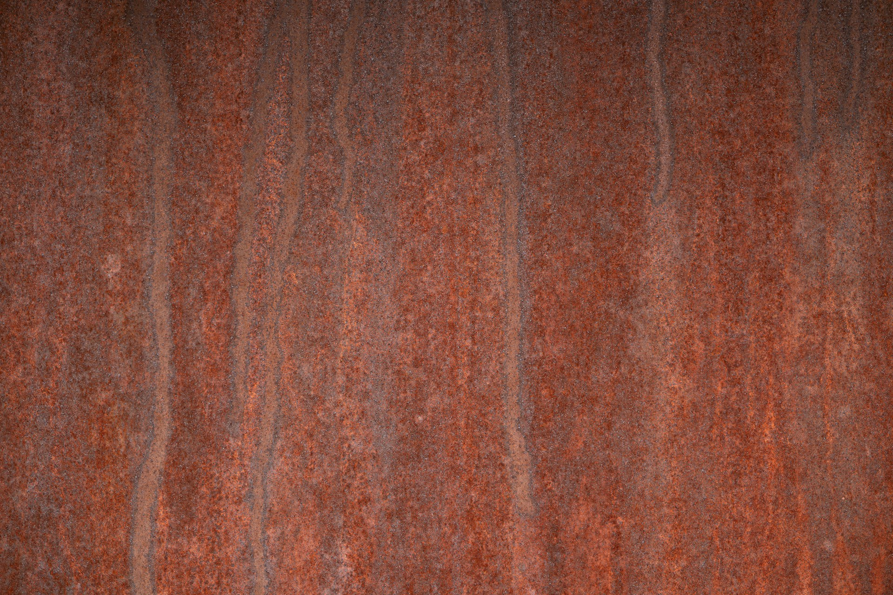
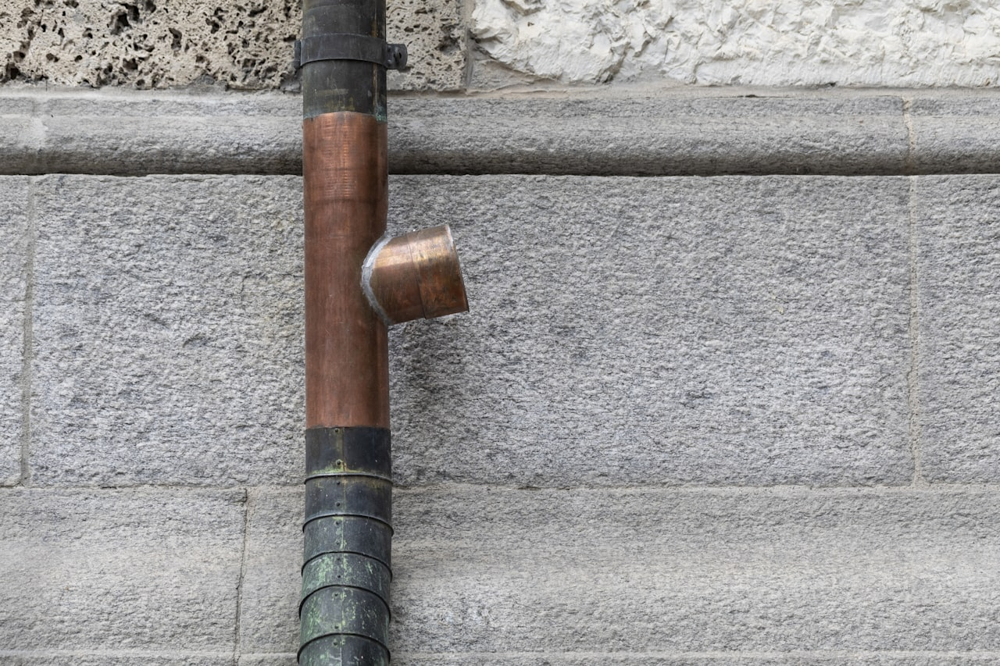
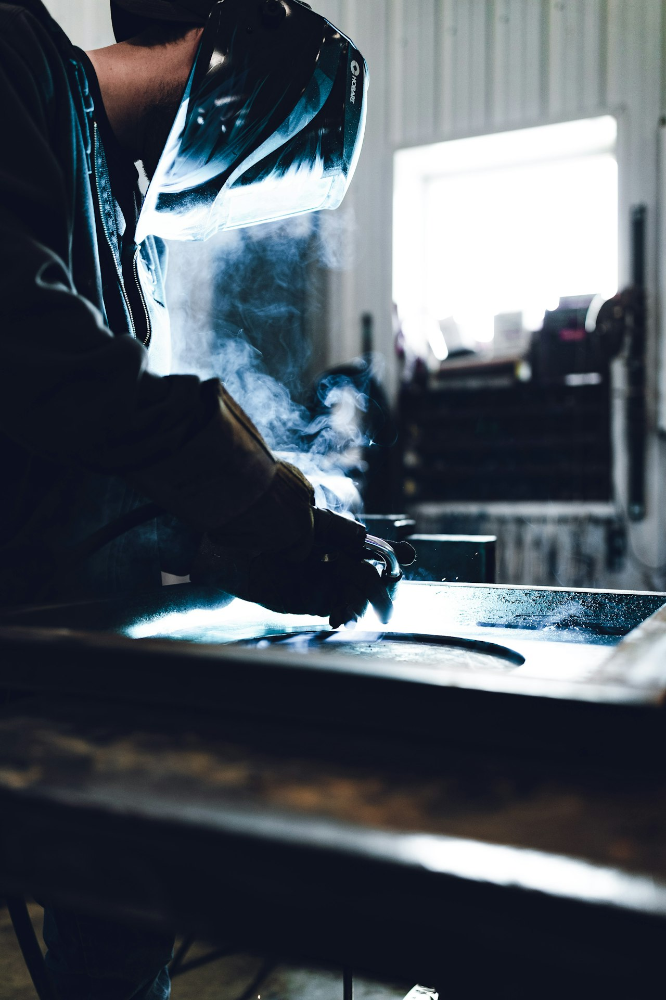
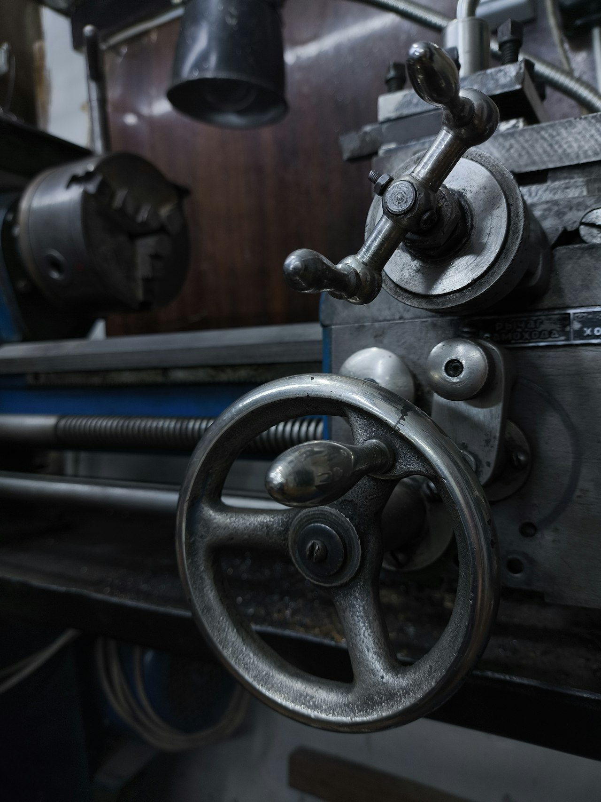
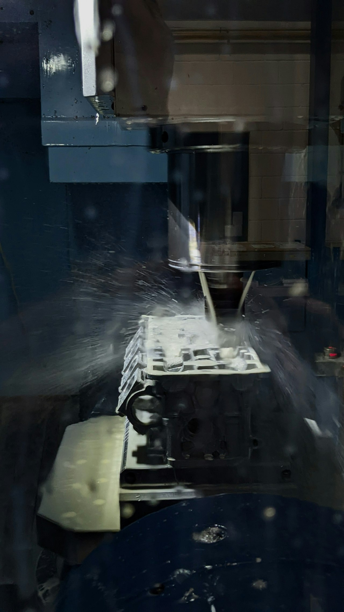
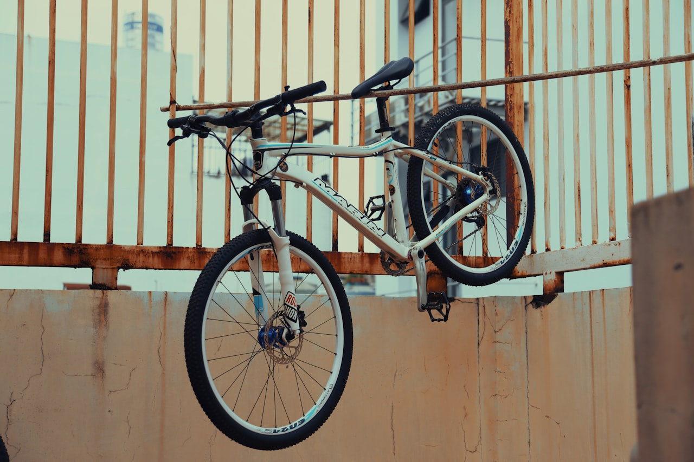
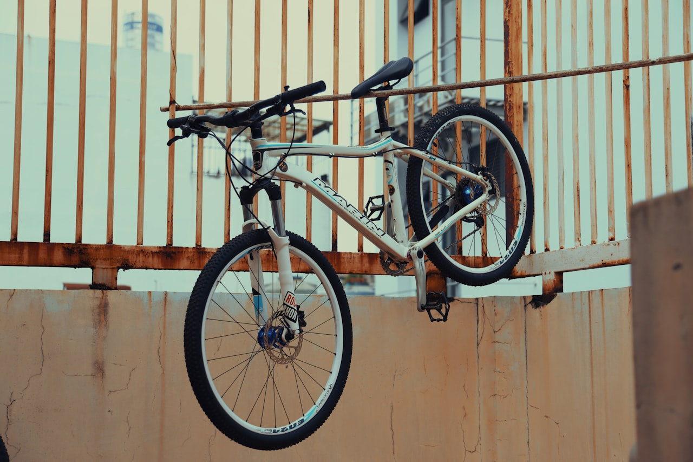

Metal Types
Metals & Manufacturing
What About Metal?
Terms:
Ferrous

- Contains iron (Fe)
- Magnetic
- Prone to rust (oxidation)
- Generally stronger
- Examples: steel, cast iron, wrought iron
Non-Ferrous

- Contains no iron
- Not magnetic
- Naturally corrosion resistant
- Generally lighter
- Examples: aluminum, copper, brass, titanium
Why Do You Care?
- The harder the metal, the more it wears your tools
- "Machinability" = how easy it is to cut, drill, and shape
- Wrong metal + wrong process = ruined project
- Different metals require different welding wire, gas, and settings
- Cost varies wildly — mild steel is ~$1/lb, stainless can be ~$3-4/lb
Mild Steel (1018 / A36)
6061 Aluminum
Stainless Steel (304 / 316)
MIG Welding
Gas Metal Arc Welding (GMAW)
- How it works: wire-fed electrode melts into the joint
- Shielding gas protects the weld pool from contamination
- Steel setup: ER70S-6 wire + C25 gas (75% Ar / 25% CO2)
- Aluminum setup: ER4043 wire + 100% Argon
- Easiest welding process to learn
- "Point and shoot" — the hot glue gun of welding
- Travel speed matters — too fast = cold weld, too slow = burn-through
- Wire speed + voltage must be balanced

Lathe Turning
Cylindrical Machining
- How it works: workpiece spins, cutting tool stays still
- Creates round/cylindrical shapes
- Operations: facing, turning, boring, threading, knurling
- RPM changes by material:
- Steel: ~300-600 RPM
- Aluminum: ~800-1500 RPM
- Stainless: ~200-400 RPM (slow!)
- Cutting fluid reduces heat and improves finish
- Never leave the chuck key in the chuck

Milling
Precision Material Removal
- How it works: spinning cutter removes material from a clamped workpiece
- Creates flat surfaces, slots, pockets, and contours
- Operations: face milling, end milling, slot cutting, drilling
- Feed rate changes by material:
- Steel: moderate feed, lower RPM
- Aluminum: aggressive feed, higher RPM
- Stainless: light feed, low RPM, constant cutting fluid
- Workholding is critical — vise must be tight
- Climb milling vs. conventional — know the difference

Quick Reference
 
